Unidad Temática I. Operaciones básicas de los Sistemas Manejadores de Bases de Datos Relacionales (SMBDR)
Unidad de competencia
Usa instrucciones de operaciones de manejo de información con base en el SQL como lenguaje estándar de los SMBDR.
Los siguientes temas se tratan en esta unidad
1.1 Funciones de un Sistema Manejador de Bases de Datos Relacional (SMBDR)
Haciendo una analogía, un SMBDR es como un bibliotecario mágico muy veloz. Si la base de datos es un cuarto lleno de miles de libros sueltos, el SMBDR es el bibliotecario que sabe exactamente en qué estante está cada página, quién tiene permiso de leerla y toma notas si alguien cambia una palabra.
Por lo anterior nos damos cuenta de la importancia de los SMBDR, antes de continuar, es necesario conocer qué es un Sistema Manejador de Bases de Datos Relacional (SMBDR).
¿Qué es un SMBDR?
Es un conjunto de programas, subrutinas o procedimientos que nos van a permitir gestionar (administrar) una base de datos. Un SMBDR es un software que sirve para estructurar, almacenar, manipular, ordenar, proteger y buscar la información de forma rápida y segura. Sirve como un intermediario entre las personas y los datos guardados en una computadora.
Un SMBDR no es una simple lista de datos, sino un sistema formado por un conjunto de instrucciones del Lenguaje Estructurado de Consulta SQL (Structured Query Language) que interactúan entre sí, que definen, alteran y blindan el activo más valioso de las empresas, las escuelas, las organizaciones, etc., que es la información.
Un SMBDR tiene tres funciones principales
- a) Definición o descripción
- b) Manipulación
- c) Control
a) Definición o descripción (plano)
Para cumplir con esta función, es necesario utilizar el Lenguaje de Definición de Datos (DDL) del lenguaje SQL. Se considera el plano porque se definen las tablas con sus respectivos campos (atributos), por ejemplo, la tabla Alumno que contiene los siguientes atributos: Boleta, Nombre_Alumno, Edad_Alumno y Teléfono.
Las instrucciones (comandos) del DDL sirven para definir (CREATE), modificar (ALTER) o eliminar (DROP) objetos como:
- Tablas
- Vistas
- Índices
- Procedimientos
- Triggers
- Transacciones
b) Manipulación
Para cumplir con esta función, es necesario utilizar el Lenguaje de Manipulación de Datos (DML) del lenguaje SQL. El DML es un grupo de instrucciones que sirven para agregar, borrar, actualizar y consultar los registros de las tablas, respetando las reglas de integridad. Con el DML los usuarios manipulan la información que está en las tablas.
Las instrucciones son:
- INSERT agrega nuevos registros.
- DELETE borra registros.
- UPDATE actualiza valores de los registros que ya existen.
- SELECT realiza consultas.
c) Control (el Guardián)
Para cumplir con esta función, es necesario utilizar el Lenguaje de Control de Datos (DCL) del lenguaje SQL. Se asegura de que nadie robe la información ni la borre por error. Cuida que dos personas no cambien el mismo dato al mismo tiempo y hace copias de seguridad por si la computadora se apaga de repente.
Las siguientes instrucciones del DCL sirven para dar o quitar privilegios (permisos):
- GRANT autoriza un privilegio sobre un objeto.
- REVOKE retira un privilegio ya autorizado.
Los privilegios (permisos) que se les otorgan a los usuarios sobre las tablas o vistas son sobre las instrucciones del DML:
- INSERT
- DELETE
- UPDATE
- SELECT
La siguiente tabla 1, nos muestra de manera general las funciones de los SMBDR
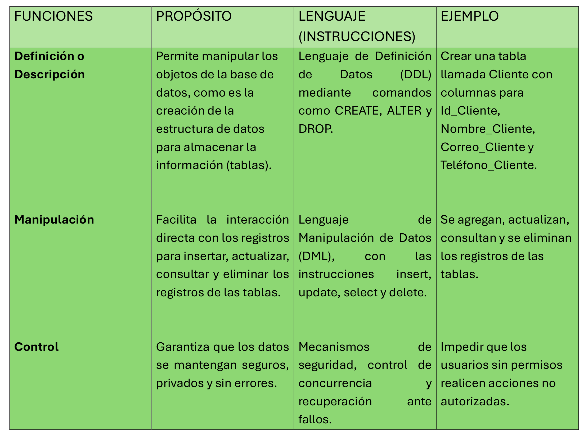
Tabla 1 Funciones del SMBDR
Ejercicio del tema 1.1 Funciones de un Sistema Manejador de Bases de Datos Relacional (SMBDR)
Resuelve cada ejercicio con la información del tema.
Ejercicio 1. Clasifica las instrucciones
Escribe cuál es su función de DDL, DML o DCL.
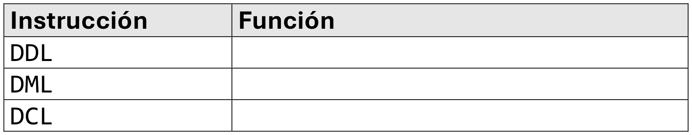
Tabla de trabajo del ejercicio 1
1.2 Modelo relacional y las 12 reglas de Codd
¿Cómo guardarías la información de docentes, alumnos, secuencias y unidades de aprendizaje sin que se repitan datos o se pierda información?
Para poder contestar la anterior pregunta, es importante tener identificado el espacio donde se va a almacenar dicha información, para las bases de datos relacionales la estructura de datos que se utiliza para guardar dicha información son los arreglos bidimensionales (matrices, comúnmente conocidas como tablas).
Para comprender que es el modelo relacional de bases de datos, primeramente, tenemos que identificar que significa. Este modelo fue propuesto por Edgar F. Codd en 1970, y se encarga de organizar la información en relaciones (conocidas como tablas) compuestas por filas y columnas, permitiendo conectar datos mediante claves.
Las reglas del modelo relacional son muy importantes porque permiten:
- Consistencia y orden: Evita la duplicidad y asegura que los datos guarden coherencia mediante reglas de integridad.
- Estandarización con SQL: Permite realizar consultas potentes, complejas y seguras basadas en el álgebra relacional.
- Base de la tecnología actual: Sigue siendo el estándar principal en la industria para la gran mayoría de sistemas transaccionales y aplicaciones empresariales a través de motores como MySQL, PostgreSQL, Oracle o SQL Server.
Ejercicio del tema 1.2 Modelo relacional y las 12 reglas de Codd
Resuelve cada ejercicio con la información del tema.
Ejercicio 2. Lee una relación
Observa la relación Alumno y contesta en tu cuaderno.
- ¿Cuántas filas y columnas tiene?
- ¿Qué columna funciona como clave?
- ¿Qué representa cada fila?
- ¿Cómo se llama cada columna?
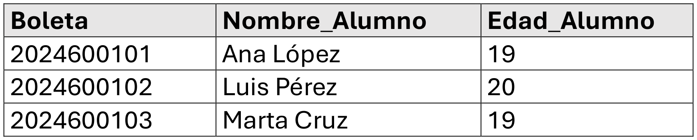
Relación Alumno
1.3 Componentes y ambiente de trabajo
Un SMBDR es como un taller mecánico con herramientas (software), autos (datos), mecánicos (usuarios) y un manual de trabajo (reglas). Casi siempre trabaja en modo cliente y servidor. Los clientes mandan sus pedidos en SQL por la red y el servidor los atiende uno por uno para que no se pierda ningún dato.
En la siguiente tabla 2 se muestran las partes del servidor de un SMBDR:
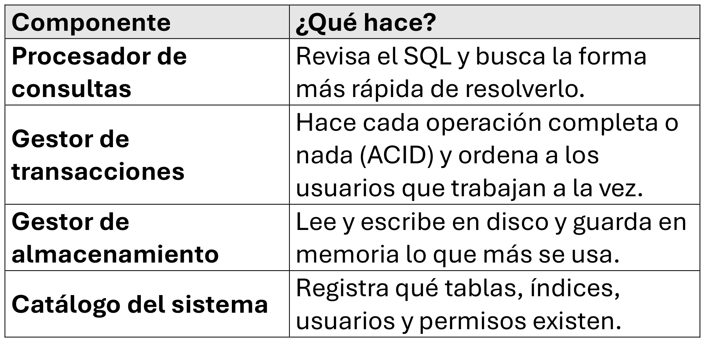
Tabla 2 partes del servidor de un SMBDR
La siguiente figura 1 demuestra como se lleva a cabo la relación entre los clientes con el servidor de un SMBDR
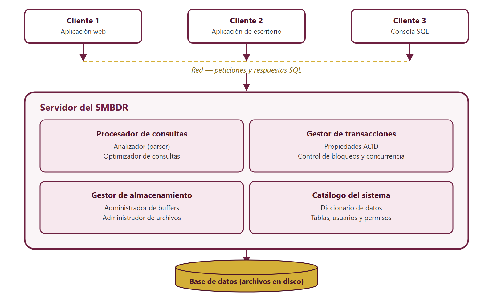
Figura 1 Relación cliente y servidor de un SMBDR
Ejercicio del tema 1.3 Componentes y ambiente de trabajo
Resuelve cada ejercicio con la información del tema.
Ejercicio 3. Ordena el recorrido de una petición
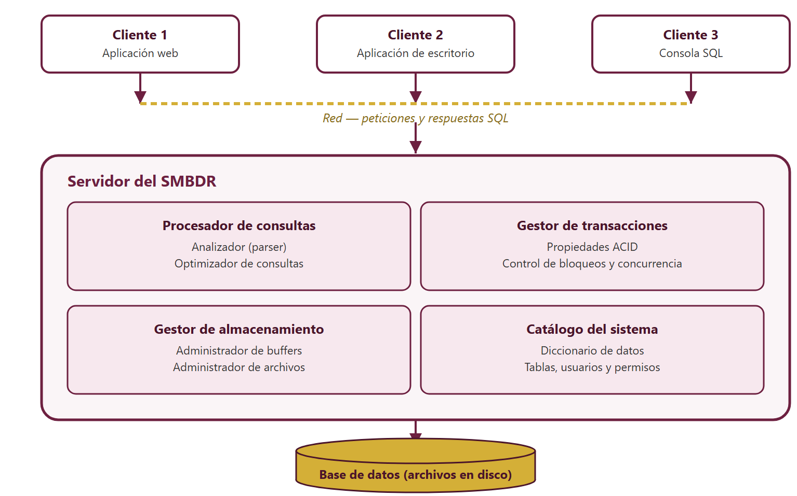
Figura 1 Relación cliente y servidor de un SMBDR
Pasos por ordenar
Un cliente con aplicación web consulta los datos de un alumno. Con ayuda de la Figura 1 numera del 1 al 6 el orden en que ocurre cada paso.
- a) El servidor responde al cliente por la red. ( )
- b) El gestor de almacenamiento lee los datos. ( )
- c) El cliente envía su consulta SQL por la red. ( )
- d) El procesador de consultas revisa el SQL. ( )
- e) El gestor de transacciones ordena a los usuarios. ( )
- f) El catálogo verifica tablas y permisos. ( )
1.4 Estructura de almacenamiento y objetos
Una base de datos es como un edificio de archivo. El edificio es la base de datos, cada piso es un esquema y los archiveros son los objetos, como tablas, vistas e índices. En el sótano están los archivos del disco. Así, cada objeto tiene una parte lógica, la que manejas con SQL, y una parte física, la que se guarda en el disco.
Una base de datos define cómo se organizan, guardan y recuperan los datos de forma eficiente. Este diseño se divide en dos niveles principales: la arquitectura física (almacenamiento) y la arquitectura lógica (objetos). En la siguiente figura 2 se presenta como está constituida la estructura jerárquica de una base de datos:
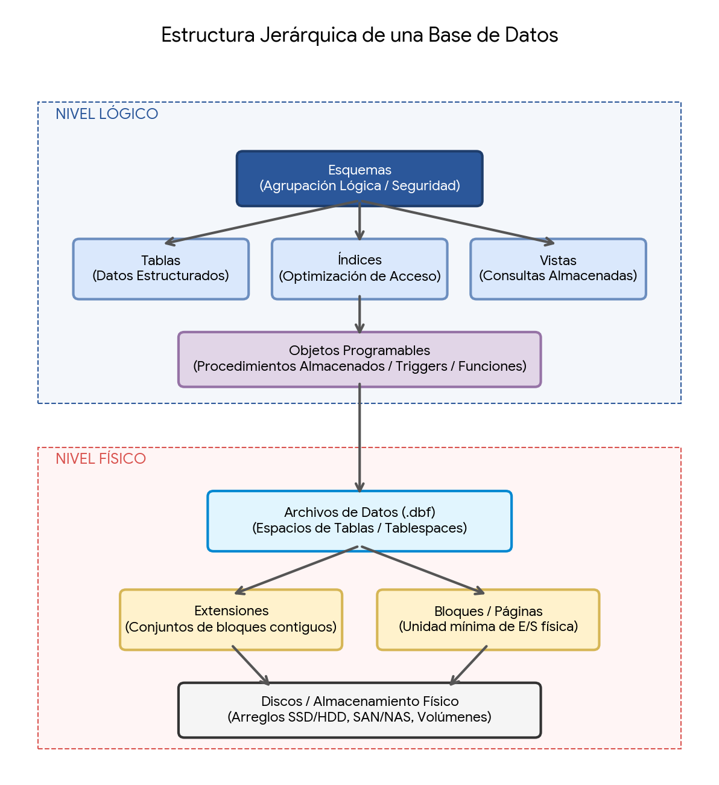
Figura 2 estructura jerárquica de una base de datos
Ejercicio del tema 1.4 Estructura de almacenamiento y objetos
Resuelve cada ejercicio con la información del tema.
Ejercicio 1. Ubica cada elemento en su nivel
Escribe si cada elemento pertenece al nivel lógico o al nivel físico.
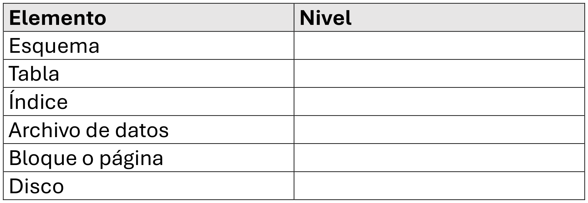
Tabla de trabajo del ejercicio 1
1.5 Instrucciones estándar de lenguaje estructurado de consulta (Structured Query Language/SQL)
Antes de continuar, es importante recordar las fases para el diseño de una base de datos relacional.
El diseño de una base de datos relacional pasa por tres fases principales:
- Diseño Conceptual:
- Se analizan los requisitos del negocio o sistema.
- Se crea un Diagrama Entidad-Relación (DER) definiendo entidades, primary key, atributos y cardinalidades (1:1, 1:N, N:M).
- Diseño Lógico:
- Se transforma el diagrama conceptual (DER) en el modelo relacional (tablas, tuplas, campos, dominio, claves primarias y foráneas).
- Diseño Físico
- El modelo relacional se implementa en un Sistema Manejador de Bases de Datos Relacional (SMBDR) utilizando SQL (Structured Query Language)
Realiza el siguiente ejercicio:
Es el momento para evaluar la comprensión de las fases del diseño de una base de datos, iniciaremos con el diseño conceptual considerando lo siguiente o en su caso el que sugiera el docente:
Una clínica veterinaria quiere llevar el control de sus pacientes. Cada dueño registra a una o varias mascotas. Cada mascota puede tener muchas consultas y cada consulta la atiende un solo veterinario. En una consulta se pueden recetar varios medicamentos, y un mismo medicamento aparece en muchas consultas. De cada receta se guarda la cantidad y las indicaciones.
El diseño conceptual (DER) del anterior caso quedaría representado como se muestra en la siguiente figura 3
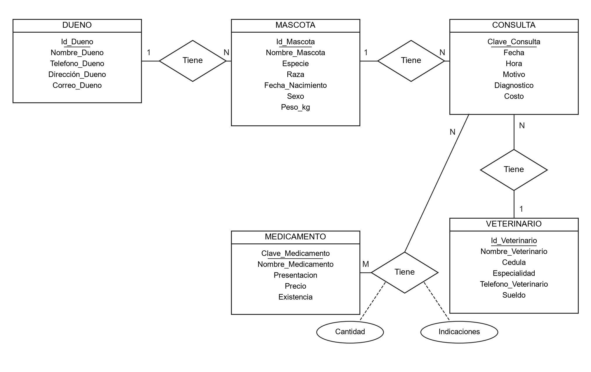
Figura 3 Diagrama Entidad Relación (DER)
La segunda fase del diseño de una base de datos es el diseño lógico, que consiste en transformar el diseño conceptual (DER) a un modelo relacional.
Es necesario cumplir con los siguientes pasos para transformar el DER a un modelo relacional:
- Cada entidad se convierte en una relación (tabla).
- Los atributos de la entidad se convierten en columnas.
- El identificador pasa a ser la clave primaria (subrayada).
- La cardinalidad de 1:N (uno a muchos) en el lado de la entidad que tiene 1 (uno) hereda su llave primaria a la entidad que tiene M (muchos) convirtiéndose en llave foránea
- La cardinalidad de M:N (se genera una relación (tabla) intermedia, que contiene las llaves primarias de ambas relaciones que se convierte en llaves foráneas.
Realiza el siguiente ejercicio:
Es el momento para evaluar el entendimiento del diseño lógico. Aplica los pasos anteriores para convertir el diseño conceptual (DER) al diseño lógico.
El diseño lógico de la Veterinaria quedaría de la siguiente forma:
Veterinario (Id_Veterinario_Pk, Nombre_Veterinario, Cedula, Especialidad, Telefono_Veterinario, Sueldo)
Medicamento (Clave_Medicamento_PK, Nombre_Medicamento, Presentacion, Precio, Existencia)
Dueno (Id_Dueno_Pk, Nombre_Dueno, Telefono_Dueno, Dirección_Dueno, Correo_Dueno)
Mascota (Id_Mascota_PK, Nombre_Mascota, Especie, Raza, Fecha_Nacimiento, Sexo, Peso_kg, Id_Dueno_FK)
Consulta (Clave_Consulta_PK, Fecha, Hora, Motivo, Diagnostico, Costo, Id_Mascota_FK, Id_Veterinario_FK)
Consulta_Medicamento (Clave_Consulta_FK, Clave_medicamento_FK, Cantidad, Indicaciones)
La tercera fase del diseño de una base de datos es el diseño físico, que consiste en convertir el modelo relacional (el anterior diseño lógico) a un esquema físico, es la creación física de la base de datos utilizando las instrucciones del SQL de un SMBDR.
Para continuar, primeramente, debemos comprender en que consiste el SQL.
El SQL (Lenguaje de Consulta Estructurado) es el lenguaje estándar universal diseñado para administrar, manipular y recuperar datos. El SQL es el lenguaje principal que se utiliza en los Sistemas Manejadore de Bases de Datos Relacionales (SBMDR).
El propósito del SQL es proporcionar una interfaz unificada y declarativa para interactuar con bases de datos relacionales, permitiendo a los usuarios indicar qué datos desean consultar.
Aunque han surgido tecnologías NoSQL, SQL sigue siendo la columna vertebral del análisis de datos, el desarrollo de software empresarial y los sistemas transaccionales a nivel mundial.
El diseño de SQL es modular y se divide en tres sublenguajes específicos según la tarea que se va a realizar sobre los objetos y los datos. A continuación, se muestra la figura 4 que representa los tres sublenguajes de SQL:
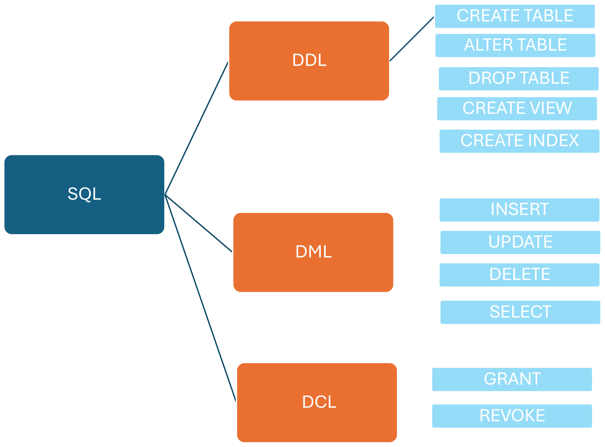
Figura 4 sublenguajes de SQL
A. Lenguaje de Definición de Datos (DDL - Data Definition Language)
Se encarga del diseño estructural y la creación de los objetos de la base de datos (tablas, índices, vistas).
- CREATE: Crea nuevos objetos (bases de datos, tablas, vistas, índices, procedures, triggers, transacciones).
- ALTER: Modifica la estructura de un objeto existente (añadir o elimina una columna).
- DROP: Elimina un objeto de la base de datos (tabla).
- CREATE VIEW: Crea vistas para el acceso a la información.
- CREATE INDEX: Acceso directo y rápido a las tablas.
Para poder iniciar la creación de las tablas, es necesario conocer los tipos de datos que utiliza SQL. En la siguiente tabla 3 se exponen los tipos de datos:
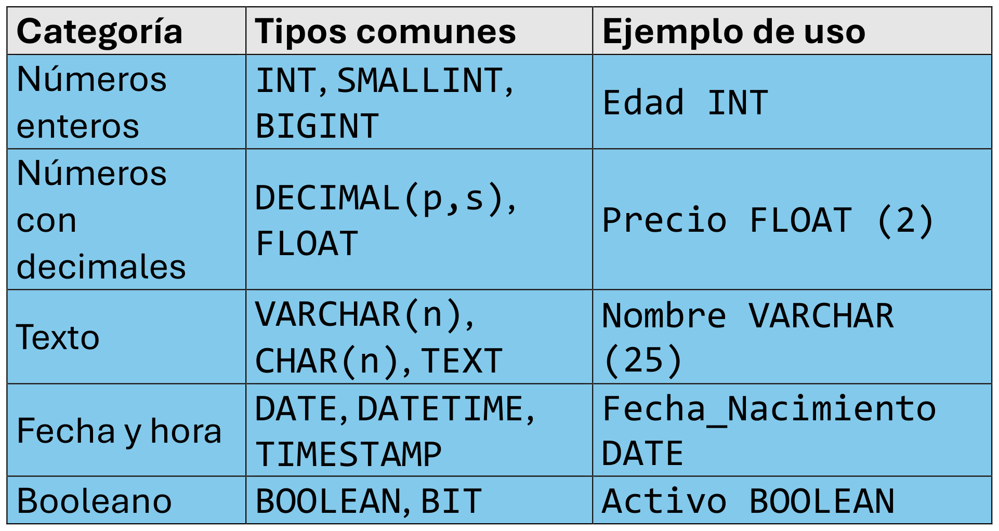
Tabla 3 tipos de datos de SQL
Tipos de Datos
1. Numéricos exactos
- INT: Enteros de -2,147,483,648 a 2,147,483,647 (ocupa 4 bytes; el más común).
- BIGINT: Enteros muy grandes de -9.22e18 a 9.22e18 (ocupa 8 bytes).
- BIT: Almacena 0, 1 o NULL (usado habitualmente para valores lógicos o booleanos).
- DECIMAL /NUMERIC: Números con parte entera y decimal de precisión fija (DECIMAL (p, s)), donde p es la precisión total y s la escala de decimales (hasta 38 dígitos).
2. Numéricos aproximados
- FLOAT / REAL: Almacena números en coma flotante para valores científicos o aproximados (ocupan 4 u 8 bytes).
3. Cadenas de caracteres
- CHAR(n): Texto de longitud fija (hasta 8,000 caracteres).
- VARCHAR(n): Texto de longitud variable (hasta 8,000 caracteres o VARCHAR(MAX)).
4. Cadenas binarias
- IMAGE: Datos binarios grandes (deprecado en favor de VARBINARY(MAX)).
6. Fecha y hora
- DATE: Solo almacena la fecha (año, mes y día).
- TIME: Solo almacena la hora con fracción de segundos.
B. Lenguaje de Manipulación de Datos (DML - Data Manipulation Language)
Se encarga de la manipulación de la información que está dentro de las tablas de una base de datos. Es un conjunto de instrucciones que permite:
- INSERT: Agrega nuevos registros o filas a una tabla.
- UPDATE: Modifica los datos existentes en uno o varios registros.
- DELETE: Borra filas o registros específicos de una tabla
- SELECT: Recupera y consulta datos almacenados en una o más tablas.
Actividad UTI_A1_Creación Física de la Base de Datos
Propósito
Utilizar un Sistema Manejador de Bases de Datos Relacional (SMBDR) ya sea SQL Server o MySQL u opcional.
La intención de esta actividad es que el estudiante comprenda y utilice las instrucciones del DDL (Lenguaje de Definición de Datos) y del DML (Lenguaje de Manipulación de Datos) de SQL, usando el SMBDR SQL Server Management Studio (opcional) para la creación de los objetos de la base de datos.
Instrucciones
1.- Utiliza el anterior ejercicio del modelo relacional o el que sugirió el docente.
2.- Realiza las siguientes instrucciones del DDL para la creación de la base de datos y de las tablas. También utilizar la instrucción del DML para insertar registros a las tablas
- Crea la base de datos, se sugiere que el nombre de la base de datos lleve sus iniciales de su nombre y el nombre del modelo relacional, por ejemplo, RBV_VETERINARIA, instrucción CREATE DATABASE.
- Crea las tablas (cada relación del modelo relacional es una tabla, si son 6 (seis) relaciones van a ser 6 (seis) tablas). También cada nombre de cada tabla debe llevar sus iniciales, instrucción CREATE TABLE.
- Utilizar la instrucción del DML (Lenguaje de manipulación de Datos) para insertar 3 (tres) registros a cada una de las tablas, instrucción INSERT INTO NOM_TABLA VALUES
Evidencia que entregar
- Deberán entregar las seis (6) (seis) instrucciones del SQL (CREATE TABLE) y mostrar el resultado de las instrucciones con el SELECT (evidencia script). Deberán enviarlo en un archivo PDF
- Entregar las 18 (diez y ocho) instrucciones del INSERT INTO
3 (tres) instrucciones por tabla
Subir esta evidencia a class room en la hora y fecha indicada.
El valor de la actividad es de 10 puntos.
Nota: Se anexan los scripts de las instrucciones del DDL y DML de SQL.
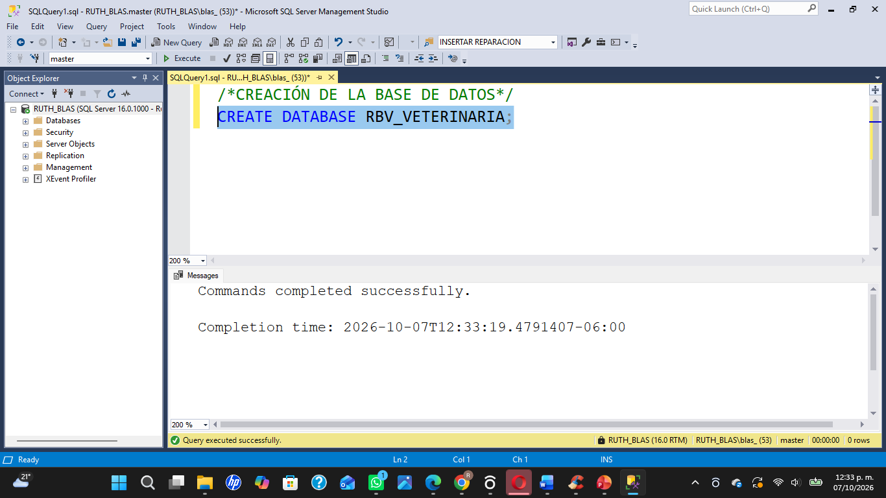
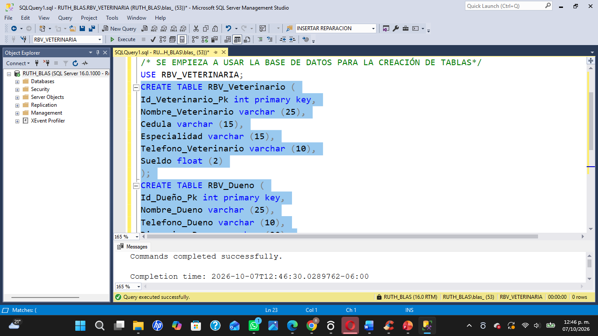
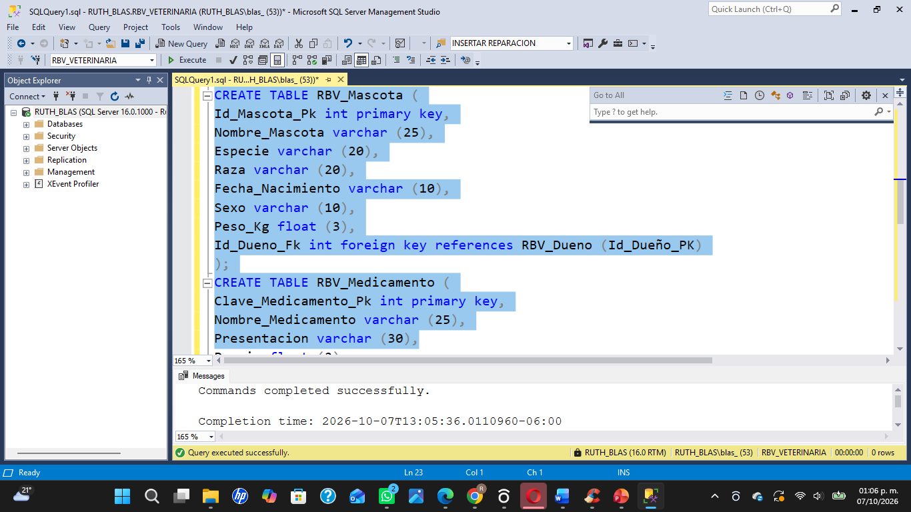
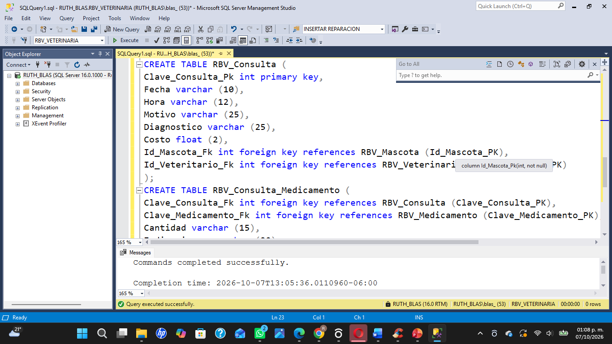
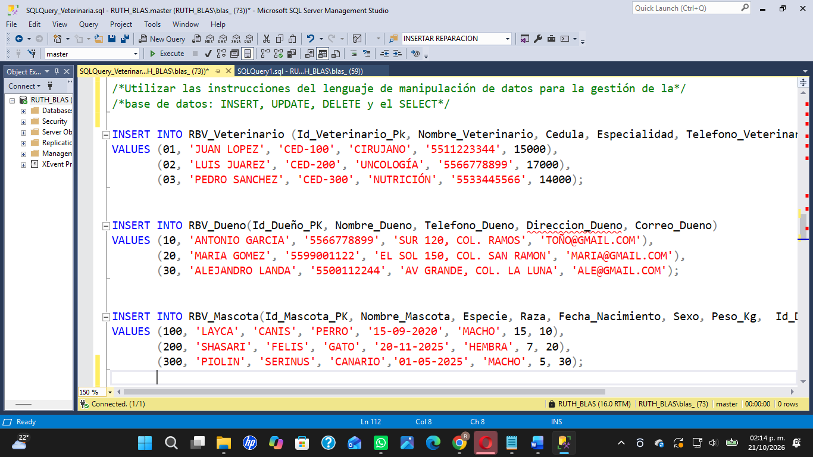
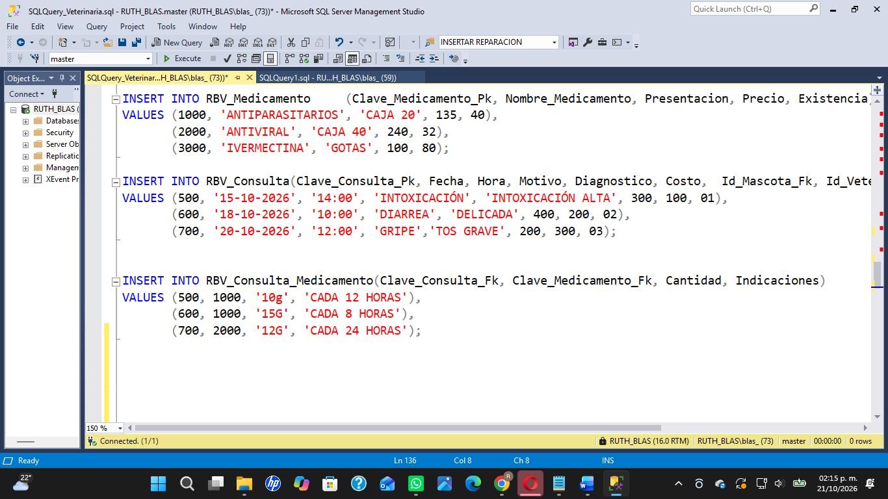
Actividad UTI_A2_Uso de las instrucciones del DDL
Propósito
Utilizar un Sistema Manejador de Bases de Datos Relacional (SMBDR) ya sea SQL Server o MySQL u opcional.
La intención de esta actividad es que el estudiante comprenda y utilice las instrucciones del DDL (Lenguaje de Definición de Datos) a las tablas creadas, las instrucciones son: Drop table, Alter table (add y drop column), Create view y Create index.
Instrucciones
1.- Realiza las siguientes instrucciones del DDL sobre las tablas ya creadas.
- Utiliza la instrucción para agregar un campo sobre las tablas ya existentes, la instrucción es ALTER TABLE NOM_TABLE ADD. Emplea la instrucción a cada una de las 6 (seis) tablas
- Aplica la instrucción para eliminar un campo a cada una de las tablas ya existentes, la instrucción es ALTER TABLE NOM_TABLE DROP COLUMN.
- Utiliza la instrucción para eliminar una tabla, la instrucción es DROP TABLE.
- Realiza 3 (tres vistas) que sean consultas multitabla, la instrucción es CREATE VIEW.
- Crea 6 (seis) índex para cada una de las tablas, la instrucción es CREATE INDEX.
Evidencia que entregar
- Deberán entregar las instrucciones del DDL ALTER TABLE ADD, ALTER TABLE DROP COLUMN, DROP TABLE, CREATE VIEW Y CREATE INDEX. Mostrar los resultados con el SELECT (evidencia script). Deberán enviarlo en un archivo PDF
Subir esta evidencia a class room en la hora y fecha indicada.
El valor de la actividad es de 10 puntos.
Nota: Se anexan los scripts de las instrucciones del DDL
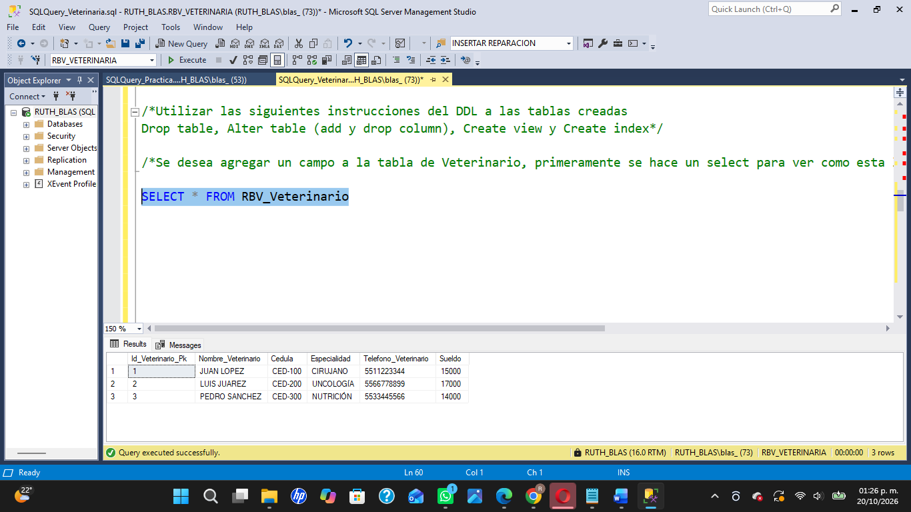
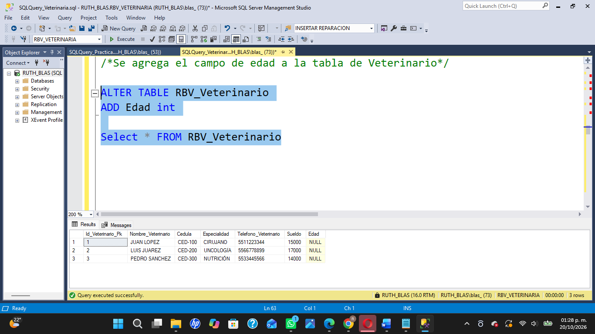
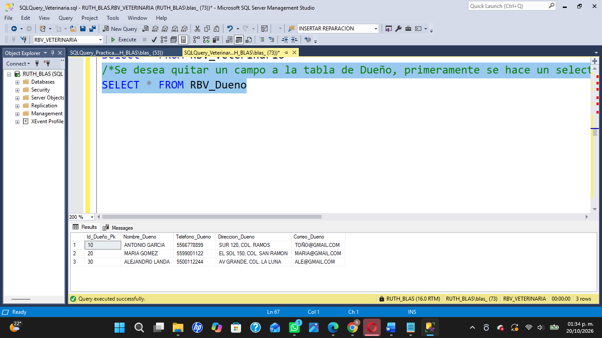
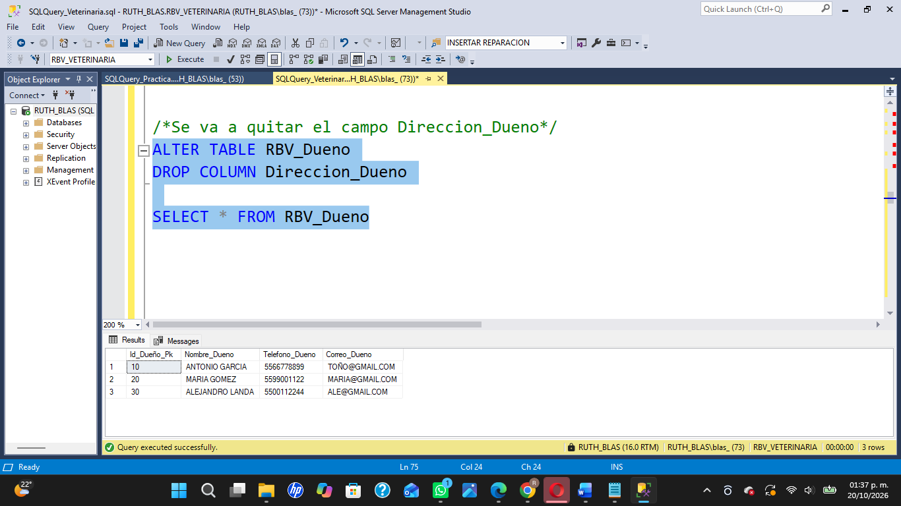
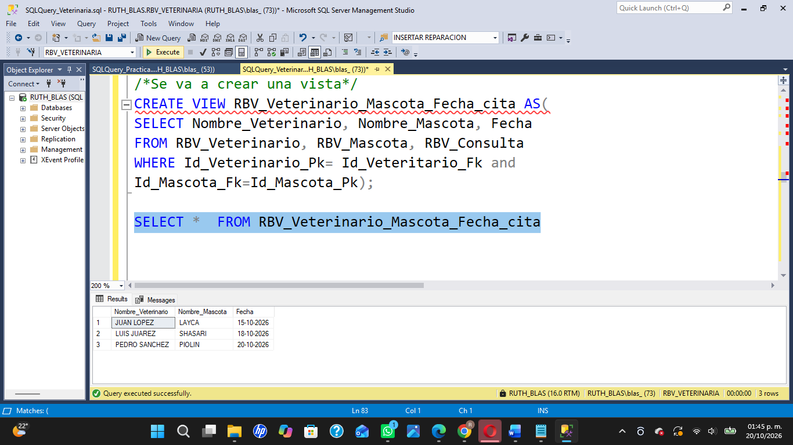
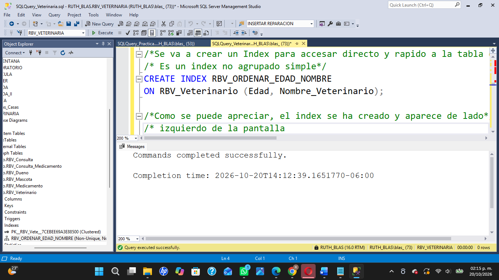
Actividad UTI_A3_Uso de las instrucciones del DML
Propósito
Utilizar un Sistema Manejador de Bases de Datos Relacional (SMBDR) ya sea SQL Server o MySQL u opcional.
La intención de esta actividad es que el estudiante comprenda y utilice las instrucciones del DML (Lenguaje de Manipulación de Datos) a las tablas creadas, las instrucciones son: Update, delete y el select.
Instrucciones
1.- Realiza las siguientes instrucciones del DML sobre las tablas ya creadas.
- Utiliza la instrucción para mostrar los campo de una tabla, la instrucción es SELECT * FROM.
- Utiliza la instrucción para actualizar un campo sobre las tablas ya existentes, la instrucción es UPDATE NOMBRE_TABLA SET NOMBRE_CAMPO = NUEVO VALOR. Emplea la instrucción a cada una de las 6 (seis) tablas
- Aplica la instrucción para eliminar un registro a cada una de las tablas ya existentes, la instrucción es DELETE FROM NOMBRE_TABLA WHERE.
Evidencia que entregar
- Deberán entregar las instrucciones del DML UPDATE, DELETE y SELECT
Subir esta evidencia a class room en la hora y fecha indicada.
El valor de la actividad es de 10 puntos.
Nota: Se anexan los scripts de las instrucciones del DDL
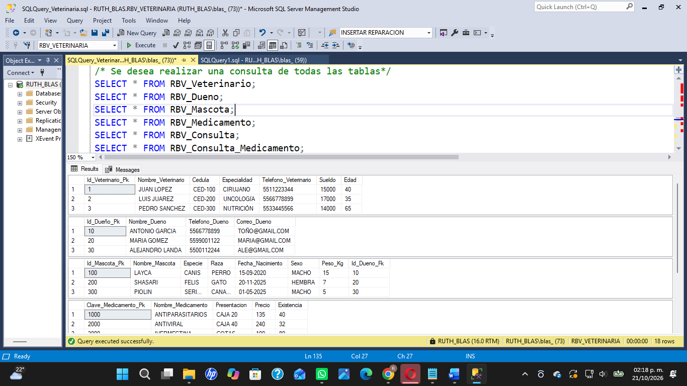
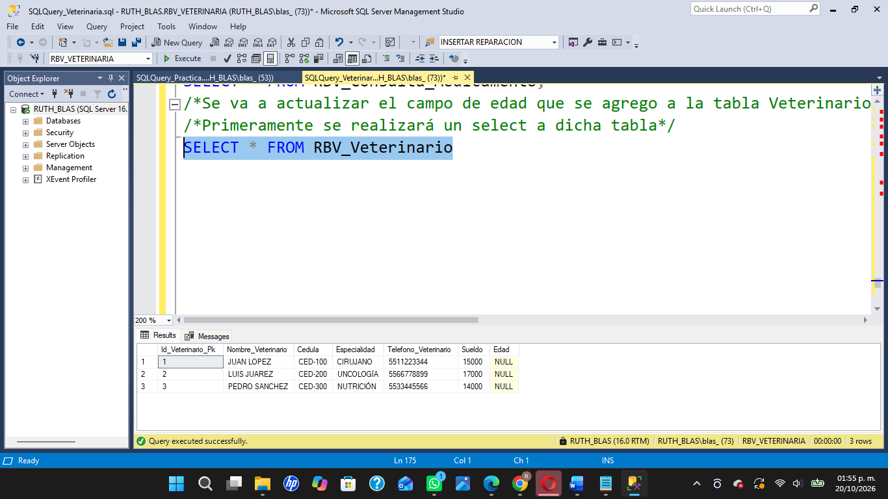
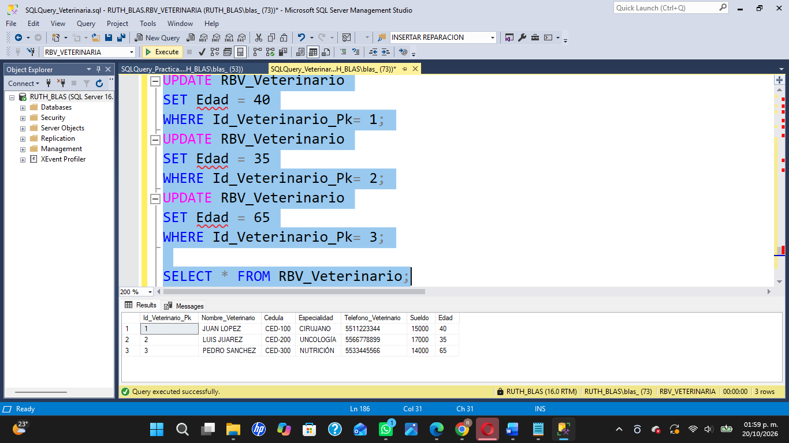
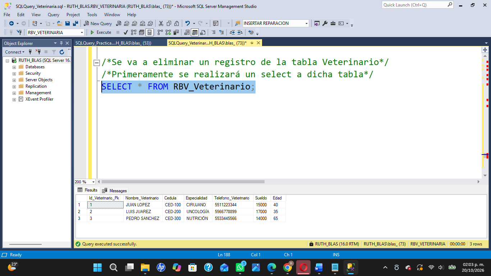
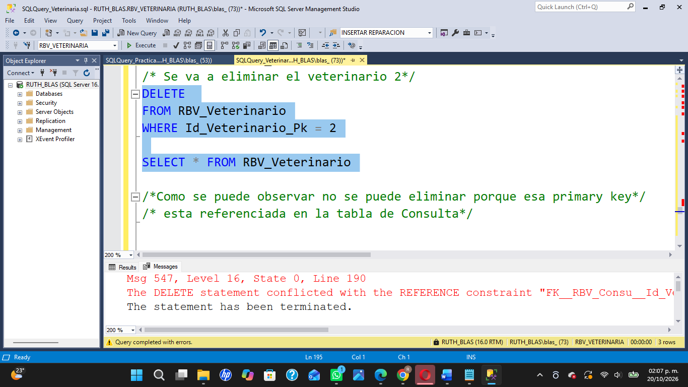
Ejercicio del tema 1.5 Instrucciones estándar de lenguaje estructurado de consulta (Structured Query Language/SQL)
Resuelve cada ejercicio con la información del tema.
Ejercicio 1. Clasifica las instrucciones
Escribe si cada instrucción es DDL, DML o DCL y cuál es su función.
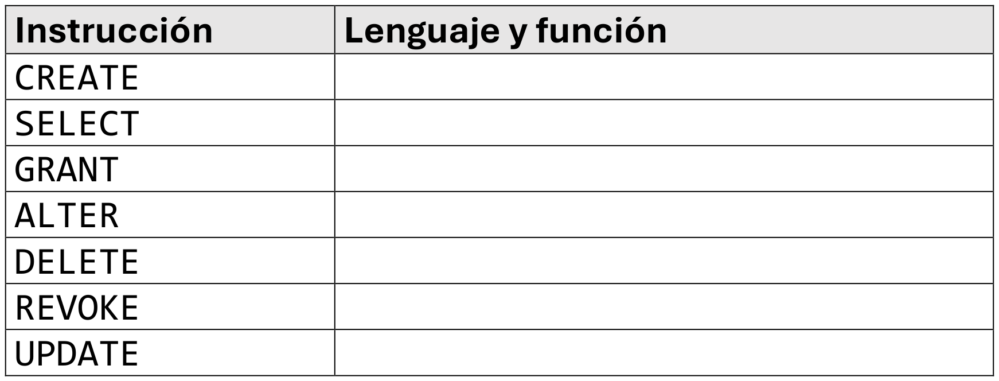
Tabla de trabajo del ejercicio 1